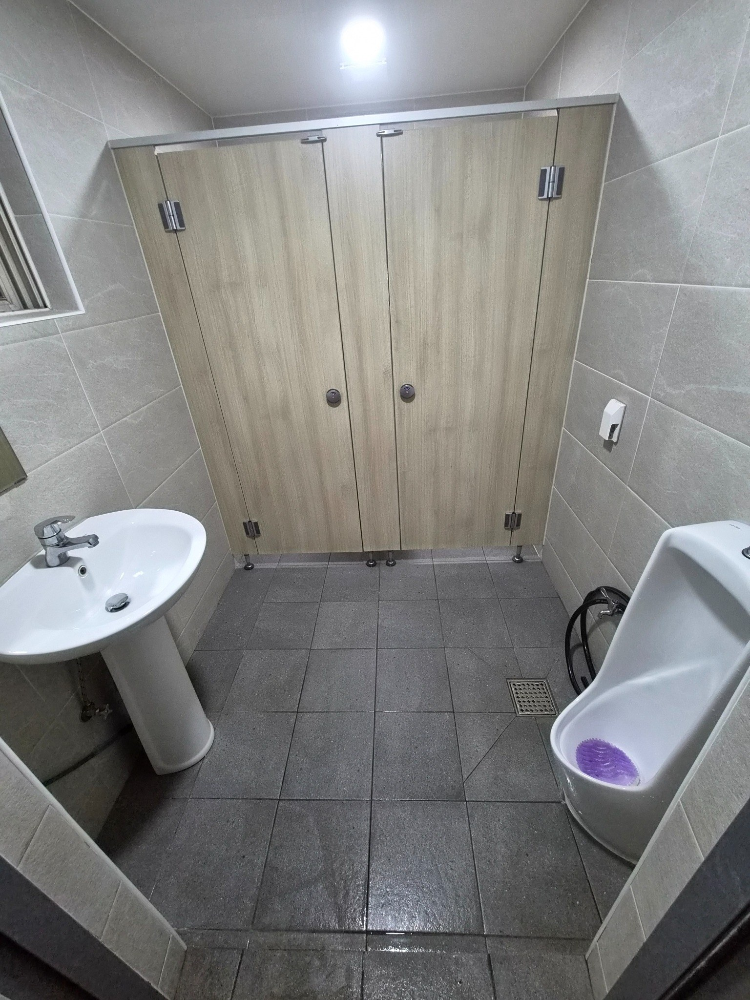
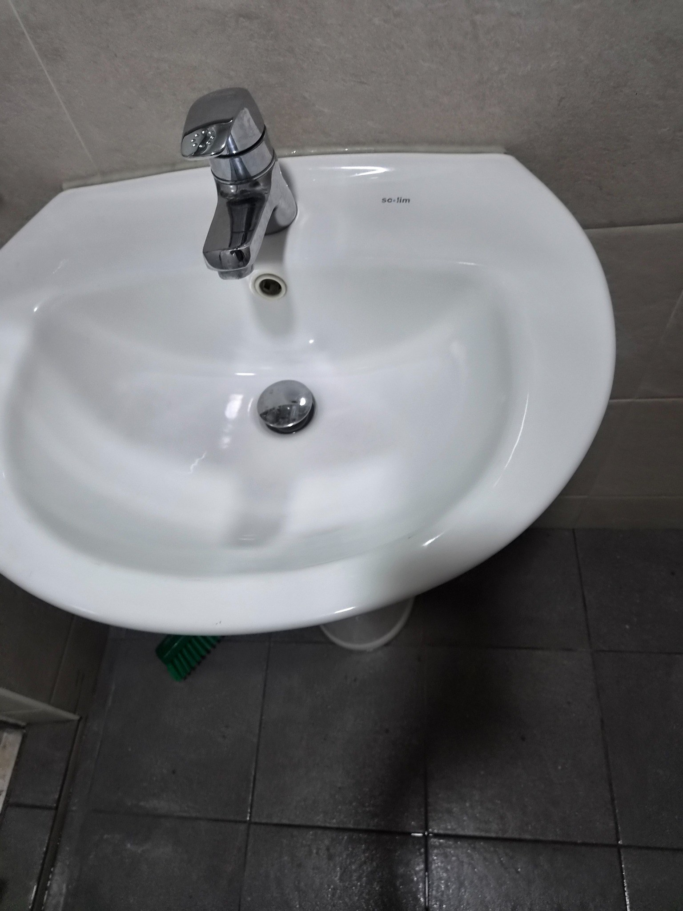
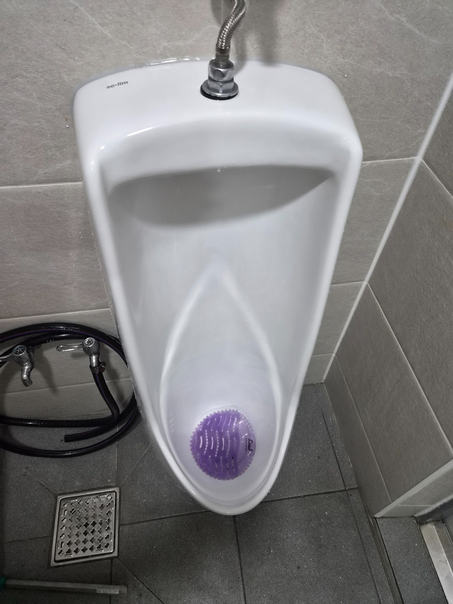
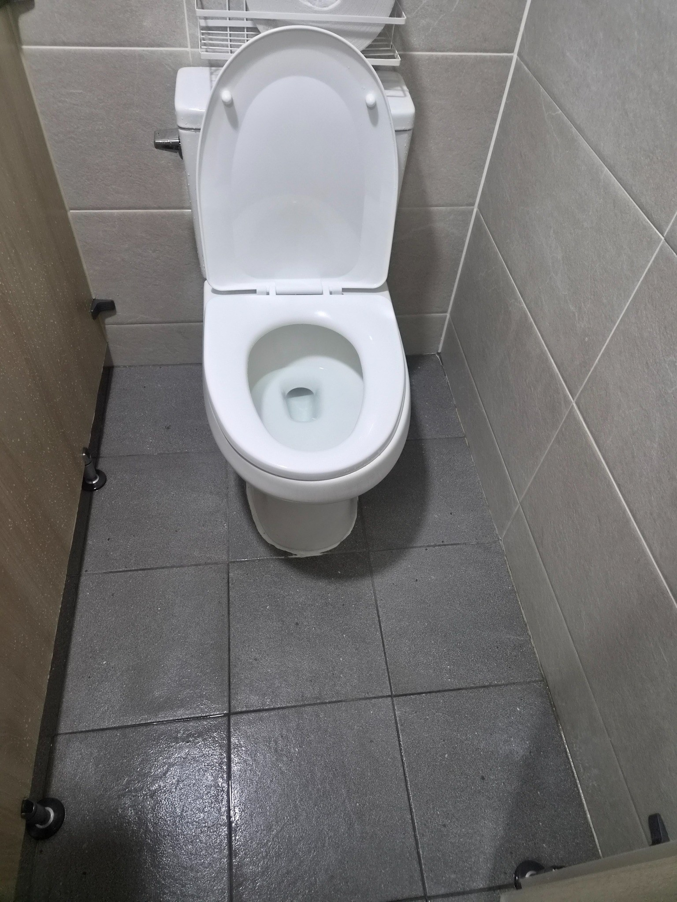
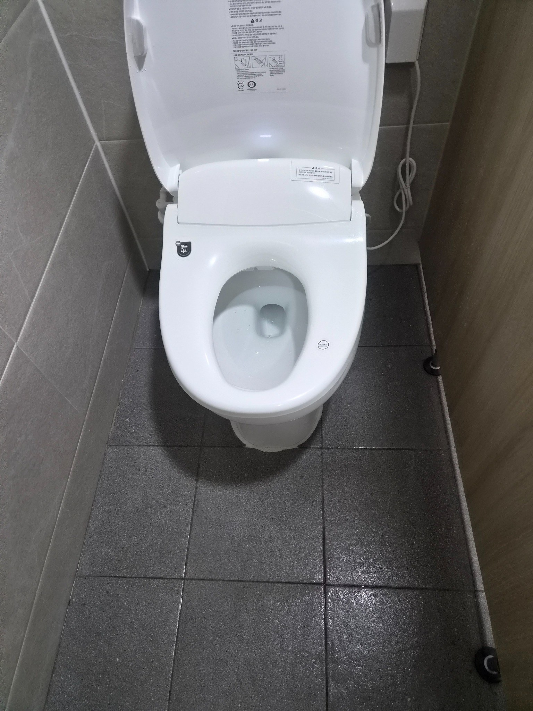

화장실은 전체 동선부터 확인합니다
작업 전에는 변기와 소변기, 세면대 위치와 바닥 배수 방향을 먼저 확인합니다. 이용자가 자주 밟는 동선과 물이 고이는 위치를 함께 보면 오염이 반복되는 이유를 파악하기 쉽습니다. 이후 기물별로 세정 순서를 나누어 진행합니다.

세면대는 물때와 수전 주변을 함께 봅니다
세면대는 수전 주변과 배수구에 물자국이 반복해서 생깁니다. 도기 표면을 정리한 뒤 수전 연결부와 벽면 접점을 확인하면 마감이 더 깔끔합니다. 손이 자주 닿는 부분인 만큼 잔여 세제가 남지 않도록 헹굼과 물기 정리를 중요하게 봅니다.

소변기 하단까지 관리해야 냄새를 줄일 수 있습니다
소변기 내부만 세정해도 겉보기에는 깨끗해 보이지만 하단 바닥과 배수구 주변에 오염이 남으면 냄새가 반복될 수 있습니다. 도기와 바닥 접점, 주변 물기를 함께 정리해 사용 후에도 깔끔한 상태가 이어지도록 관리합니다.

양변기는 시트와 외부 도기까지 확인합니다
변기 안쪽 세정 후에는 시트, 뚜껑, 도기 외부와 바닥 접점을 차례로 확인합니다. 좁은 화장실은 기물 주변에 물기가 남기 쉬워 마감 단계에서 바닥 상태도 다시 봅니다. 정기관리 시 같은 순서로 체크하면 누락을 줄일 수 있습니다.

마지막에는 전체 청결도를 다시 확인합니다
각 기물을 따로 청소한 뒤 전체를 보면 놓친 물자국이나 바닥 얼룩이 보일 수 있습니다. 거울, 세면대, 변기 주변, 배수구까지 한 번 더 확인하고 물기를 정리합니다. 이용자가 바로 들어와도 불편하지 않은 상태로 마무리합니다.
사업장 화장실은 정기관리 효과가 큰 공간입니다
직원과 방문객이 함께 사용하는 화장실은 오염이 반복되기 때문에 한 번의 대청소보다 일정한 주기의 관리가 중요합니다. 퍼펙트케어는 이용량과 운영시간을 확인해 주 1회부터 주 6회까지 상담합니다.
김해 진영 화장실청소는 다른 공용공간과 함께 관리할 수 있습니다
화장실뿐 아니라 사무실 바닥, 계단, 출입구, 휴게공간 등과 묶어 정기청소로 구성할 수 있습니다. 필요한 구역만 선택하는 방식도 가능합니다.
현장에 맞춘 무료 방문견적
정기청소와 상가·사무실·화장실 청소는 공간 크기만으로 동일한 견적을 내기 어렵습니다. 퍼펙트케어는 현장의 이용량, 바닥 재질, 오염도, 관리 범위를 확인한 뒤 필요한 작업을 안내합니다.